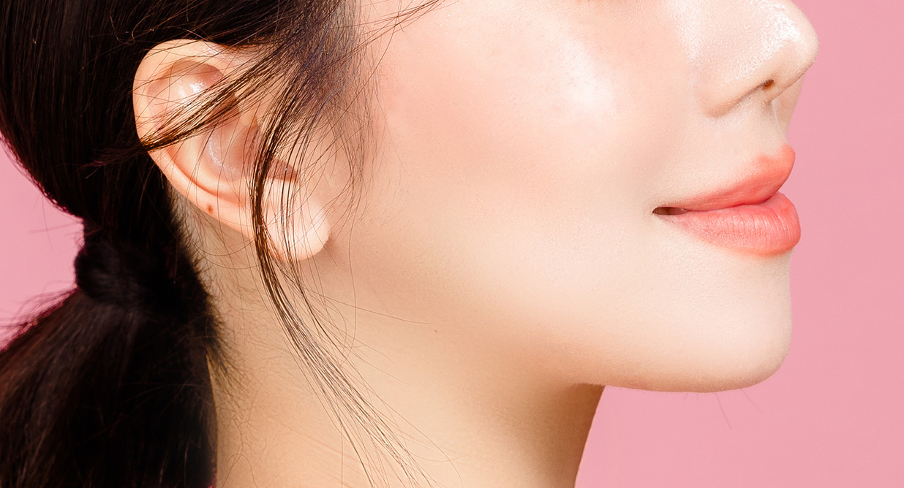

เช็คลิสต์เทรนด์ทำศัลยกรรมเกาหลีปี 2023
ไม่ว่าจะเป็นเทรนด์แต่งหน้าตามสาวเกาหลี แต่งตัวมินิมอลแบบเกาหลี หรือเทรนด์ cafe hopping แบบเกาหลี เราต้องยอมรับแล้วว่าประเทศเกาหลีทรงอิทธิพลสุดๆในเรื่อง soft power ทั้งนี้หนึ่งในเทรนด์เกาหลีที่มาแรงกว่าเทรนด์ไหนๆคือการทำศัลยกรรมในเกาหลี ประเทศที่ขึ้นชื่อเรื่องความเชี่ยวชาญในการแปลงโฉมอันดับต้นๆ ของโลก
ในปัจจุบันการทำศัลยกรรมที่เกาหลีกลายเป็นเทรนด์สำคัญที่ทำใจสาวๆหนุ่มๆคนไทยว้าวุ่นกันไปหมด เพราะที่นี่ไม่ได้มีดีแค่ชื่อ แต่ไม่ว่าใครจะไปศัลยกรรมส่วนไหน แก้ไขจุดบกพร่องใด กลับมาไทยก็กลายเป็นคนละคนทันที ทั้งนี้เพราะความนิยมมาอย่างยาวนานและต่อเนื่อง ทำให้เทรนด์ทำศัลยกรรมเกาหลีมีการเปลี่ยนแปลงอยู่ตลอดเวลา ทั้งนี้ในปี 2023 เทรนด์ศัลยกรรมเกาหลีจะเน้นไปในทางที่เน้นความเป็นธรรมชาติ เน้นสร้างความมั่นใจในตัวเองว่าทุกนมีความสวยในแบบของตัวเอง มาดูกันว่าเทรนด์ศัลยกรรมเกาหลีในปี 2023 มีอะไรบ้าง
-
ศัลยกรรมตา เน้นชั้นตาเล็ก
เทรนด์ศัลยกรรมตาในปี 2023 จะเน้นไปที่การทำชั้นตาเล็ก ที่ดูเป็นธรรมชาติมากขึ้น แทนการทำชั้นตาหนาๆ ที่ดูเป็นธรรมชาติน้อยลง โดยเทคนิคการทำชั้นตาที่นิยมในปีนี้ ได้แก่
- การทำตาสองชั้นแบบกรีดสั้น
- การทำตาสองชั้นแบบกรีดยาว
- การทำตาสองชั้นแบบเย็บ
การทำตาสองชั้นแบบกรีดสั้น เป็นการทำตาสองชั้นที่ได้รับความนิยมมากที่สุดในปัจจุบัน เพราะใช้เวลาพักฟื้นน้อย และไม่ทิ้งรอยแผลเป็น ซึ่งการทำตาสองชั้นแบบกรีดสั้นนั้น สามารถปรับระดับความสูงของชั้นตาได้ตามต้องการ ช่วยให้ดวงตาดูโตขึ้น หวานขึ้น และสดใสขึ้น
การทำตาสองชั้นแบบกรีดยาว เป็นการทำตาสองชั้นที่ได้รับความนิยมรองลงมาจากการทำตาสองชั้นแบบกรีดสั้น โดยการทำตาสองชั้นแบบกรีดยาวนั้น สามารถปรับระดับความสูงของชั้นตาได้มากกว่าการทำตาสองชั้นแบบกรีดสั้น ซึ่งเหมาะกับคนที่มีปัญหาตาชั้นเดียว หรือมีหนังตาเยอะ
การทำตาสองชั้นแบบเย็บ เป็นการทำตาสองชั้นที่ได้รับความนิยมน้อยที่สุดในปัจจุบัน โดยการทำตาสองชั้นแบบเย็บนั้น เหมาะสำหรับคนที่มีปัญหาตาชั้นเดียวเล็กน้อย หรือมีหนังตาน้อย
-
ศัลยกรรมจมูก เน้นสโลปปลายหยดน้ำ
เทรนด์ศัลยกรรมจมูกในปี 2023 จะเน้นไปที่การทำจมูกทรงสโลปปลายหยดน้ำ ซึ่งให้ความรู้สึกอ่อนหวาน ละมุนละไม และดูเป็นธรรมชาติมากขึ้น แทนการทำจมูกทรงโด่งๆ ที่ดูออกว่าผ่านการศัลยกรรม โดยเทคนิคการทำจมูกที่นิยมในปีนี้ ได้แก่
- การทำจมูกแบบเปิด
- การทำจมูกแบบปิด
การทำจมูกแบบกรีดเปิด เป็นการทำจมูกที่ได้รับความนิยมมากที่สุดในปัจจุบัน เพราะสามารถปรับรูปทรงจมูกได้อย่างละเอียด โดยการทำจมูกแบบกรีดเปิดนั้น ศัลยแพทย์จะทำการกรีดผิวหนังที่จมูกออก เพื่อทำการแก้ไขกระดูกและเนื้อเยื่อจมูก ซึ่งจะช่วยให้จมูกมีทรงที่สมส่วนและสวยงามมากขึ้น
การทำจมูกแบบกรีดปิด เป็นการทำจมูกที่ได้รับความนิยมรองลงมาจากการทำจมูกแบบกรีดเปิด โดยการทำจมูกแบบกรีดปิดนั้น ศัลยแพทย์จะทำการกรีดผิวหนังที่จมูกออกเพียงเล็กน้อย เพื่อทำการแก้ไขกระดูกและเนื้อเยื่อจมูก ซึ่งจะช่วยให้จมูกมีทรงที่สมส่วนและสวยงามมากขึ้น แต่ใช้เวลาพักฟื้นนานกว่าการทำจมูกแบบกรีดเปิด
-
ศัลยกรรมปาก เน้นปากกระจับ อวบอิ่ม
เทรนด์ศัลยกรรมปากในปี 2023 จะเน้นไปที่การทำปากกระจับ ซึ่งให้ความรู้สึกเซ็กซี่ และดูมีเสน่ห์มากขึ้น แทนการทำปากบางๆ ที่ดูเป็นธรรมชาติน้อยลง โดยเทคนิคการทำปากที่นิยมในปีนี้ ได้แก่
- การฉีดฟิลเลอร์ปาก
- การผ่าตัดริมฝีปาก
การฉีดฟิลเลอร์ปาก เป็นการทำปากที่ได้รับความนิยมมากที่สุดในปัจจุบัน เพราะใช้เวลาน้อย และไม่เจ็บมาก โดยการฉีดฟิลเลอร์ปากนั้น ศัลยแพทย์จะทำการฉีดฟิลเลอร์เข้าไปบริเวณริมฝีปาก เพื่อเพิ่มขนาดและรูปทรงของริมฝีปาก
การผ่าตัดริมฝีปาก เป็นการทำปากที่ได้รับความนิยมน้อยที่สุดในปัจจุบัน โดยการผ่าตัดริมฝีปากนั้น ศัลยแพทย์จะทำการกรีดผิวหนังบริเวณริมฝีปากออก เพื่อทำการแก้ไขรูปทรงของริมฝีปาก ซึ่งจะช่วยให้ริมฝีปากมีทรงที่สมส่วนและสวยงามมากขึ้น แต่ใช้เวลาพักฟื้นนานกว่าการฉีดฟิลเลอร์ปาก
-
ศัลยกรรมวีไลน์ เน้นเรียวยาว หน้าเล็ก
เทรนด์ทำศัลยกรรมเกาหลีทรงหน้าวีไลน์ในปี 2023 จะเน้นไปที่การทำวีไลน์ที่เรียวยาวมากขึ้น แทนการทำวีไลน์ที่สั้นๆ ที่ดูเป็นธรรมชาติน้อยลง โดยเทคนิคการทำวีไลน์ที่นิยมในปีนี้ ได้แก่
- การฉีดฟิลเลอร์วีไลน์
- การผ่าตัดวีไลน์
การฉีดฟิลเลอร์วีไลน์ เป็นการทำวีไลน์ที่ได้รับความนิยมมากที่สุดในปัจจุบัน เพราะใช้เวลาน้อย และไม่เจ็บมาก โดยการฉีดฟิลเลอร์วีไลน์นั้น ศัลยแพทย์จะทำการฉีดฟิลเลอร์เข้าไปบริเวณหน้าผากและโหนกแก้ม เพื่อเพิ่มมิติให้กับใบหน้า
ทำศัลยกรรมตามเทรนด์เกาหลีทั้งที เริ่มจากตรงไหนดีนะ?
ด้วยเทรนด์ที่มากมายอย่างที่ได้เกริ่นไปข้างต้น สำหรับมือใหม่ที่อยากศัลยกรรมแต่ยังไม่เคยมาก่อน เรามีคำแนะนำดีๆมาฝาก การเริ่มต้นทำศัลยกรรมตามเทรนด์เกาหลีนั้นขึ้นอยู่กับความชอบและงบประมาณของแต่ละคนเป็นหลัก โดยสามารถพิจารณาจากเทรนด์ศัลยกรรมเกาหลีในปี 2023 ดังต่อไปนี้
หากต้องการเริ่มต้นทำศัลยกรรมตามเทรนด์เกาหลี ควรศึกษาข้อมูลเกี่ยวกับศัลยกรรมแต่ละประเภทให้ดีก่อนตัดสินใจทำ โดยควรเลือกสถานพยาบาลและศัลยแพทย์ที่มีความเชี่ยวชาญ เพื่อความปลอดภัยและผลลัพธ์ที่ดี
สำหรับบางคนที่มีงบจำกัด อาจเริ่มต้นจากการฉีดฟิลเลอร์หรือโบท็อกซ์ เพื่อปรับรูปทรงของใบหน้าให้ดูดีขึ้นก่อน ก่อนที่จะตัดสินใจทำศัลยกรรมใหญ่ในภายหลัง อีกทั้งข้อดีของการเริ่มฉีดหน้าก่อนจะทำให้เห็นภาพว่าหากมีการเปลี่ยนแปลงแบบถาวรในภายหลังจะไม่เป็นการกระทำที่ผิดพลาด มากไปกว่านั้นแนะนำว่าควรพิจารณาถึงความต้องการและความเหมาะสมของแต่ละบุคคลด้วย โดยปรึกษากับศัลยแพทย์เพื่อหาแนวทางที่เหมาะสมที่สุด ต่อไปนี้เป็นคำแนะนำในการเริ่มต้นทำศัลยกรรมตามเทรนด์เกาหลี
- ศึกษาข้อมูลเกี่ยวกับศัลยกรรมแต่ละประเภทให้ดีก่อนตัดสินใจทำ
- เลือกโรงพยาบาลและศัลยแพทย์ที่มีความเชี่ยวชาญ
- ปรึกษากับศัลยแพทย์เพื่อหาแนวทางที่เหมาะสมที่สุด
- เตรียมตัวให้พร้อมทั้งร่างกายและจิตใจก่อนทำศัลยกรรม
- ปฏิบัติตามคำแนะนำของศัลยแพทย์หลังทำศัลยกรรมอย่างเคร่งครัด
การทำศัลยกรรมเป็นการตัดสินใจครั้งสำคัญ ควรศึกษาข้อมูลและปรึกษาผู้เชี่ยวชาญอย่างรอบคอบ เพื่อความปลอดภัยและผลลัพธ์ที่ดีที่สุด
ศัลยกรรมตา

ศัลยกรรมโครงหน้า

ศัลยกรรมปาก
ศัลยกรรมจมูก